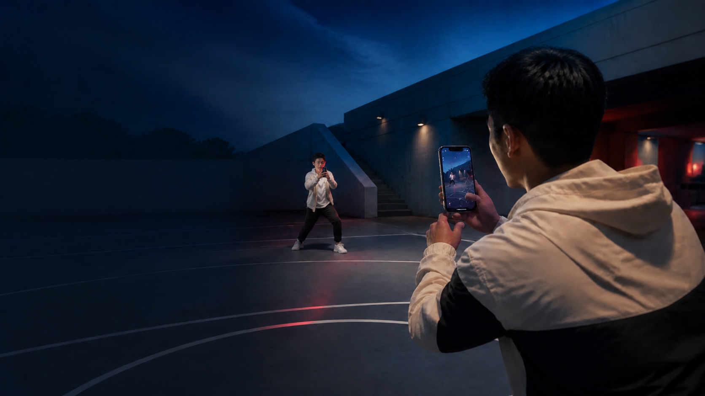

VICTORIA / MARKERLESS 1V1 DUEL
Turn a controlled field into an AR arena.
Two iPhones. No visible player markers. Aim through the camera, fire, and watch both players—and the spectator view—react in sync.
Watch the dual POVDUAL POV / 02
Watch both sides of the same duel.
Two recordings, synchronized on the shared countdown. One control plays both players together, so every hit, elimination, and respawn can be seen from both sides.
THE BUILD SYSTEM / 03
Not Cursor. Devin.
I ran PEW PEW through Devin, used Slack to stay in the loop, and kept every change reviewable in GitHub. When the app needed macOS and Xcode, I routed the work to a Devin Mac Outpost—bringing a cloud workflow to a native iOS build.
- 01Slack
- 02Devin Cloud
- 03GitHub PR
- 04Mac Outpost
- 05Xcode
- 06iPhone
Built through the cloud. Compiled on the connected Mac where Xcode and the native toolchain live.